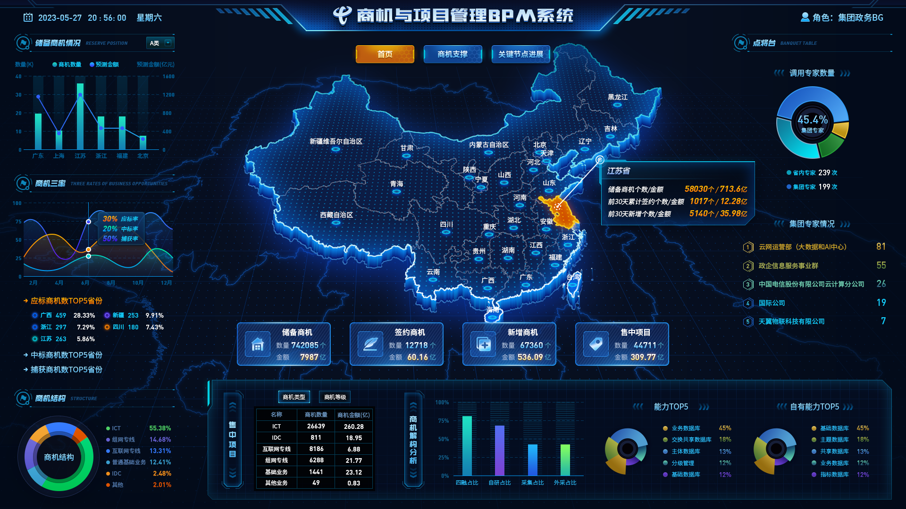
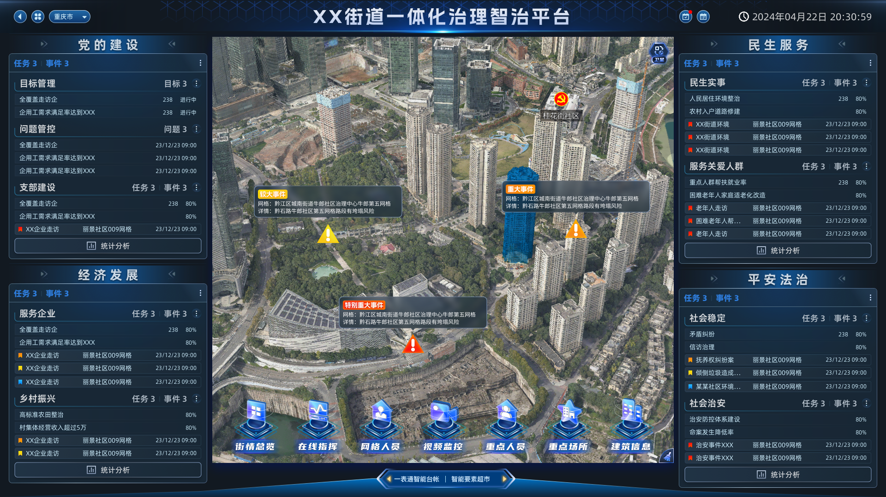
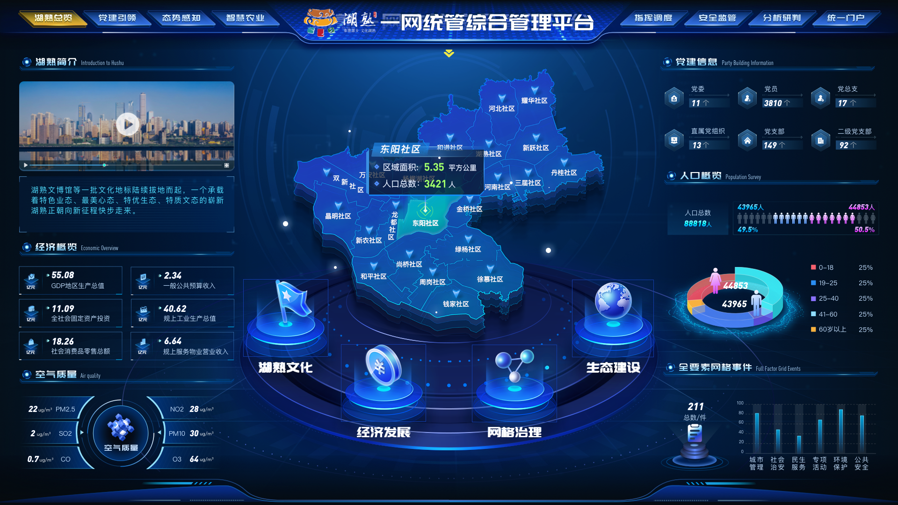
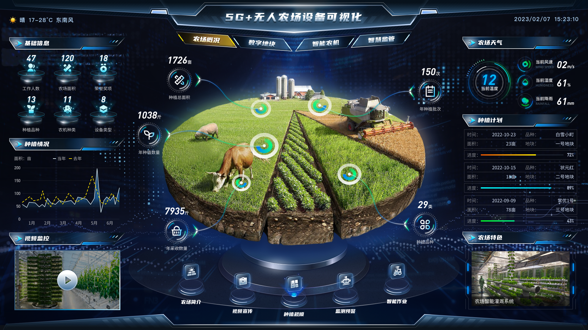
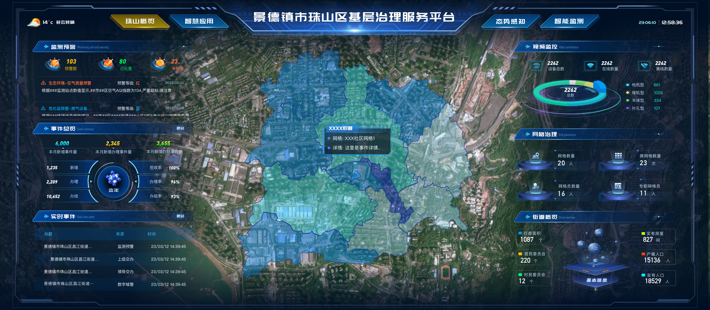
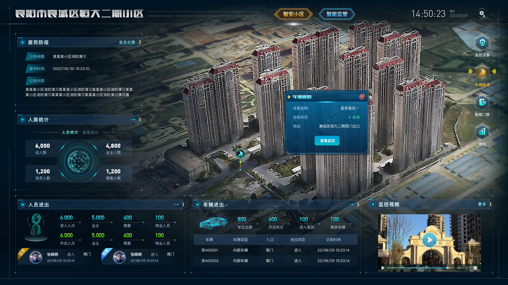
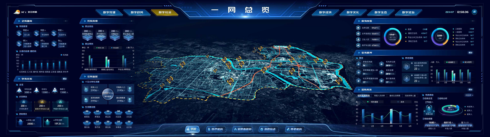

地理信息科学 | 本科学位
滁州学院 | 2014 - 2018
主修课程：空间数据库、GIS应用开发、遥感应用、地图学、空间分析
相关证书：大学英语六级、大学英语四级、计算机三级
高级GIS工程师
15755080835
1825289506@qq.com
南京市
7年工作经验
资深GIS前端工程师，拥有7年地理信息系统开发经验，专注于GIS可视化与交互设计。精通现代前端技术栈，包括Vue、React等框架，以及Leaflet、ArcGIS JS API、Cesium、Maptalks、ThreeJS等地图引擎，能够熟练构建高性能、美观的二三维地图应用。擅长ArcGIS、QGIS、GeoServer、CesiumLab等GIS工具的使用及服务发布，具备设计和开发可扩展地图组件的能力。拥有丰富的大屏可视化和空间数据分析项目经验，善于将复杂地理数据转化为直观的用户界面。具有卓越的需求分析和沟通协调能力，多次成功对接客户需求，制定项目方案并高质量交付。热爱探索地理信息技术前沿，致力于打造优秀的空间信息应用。
致力于成为GIS与前端技术融合的专家，探索空间信息可视化的创新应用，为智慧城市和数字孪生建设贡献专业价值。期望加入具有技术创新氛围的团队，参与具有挑战性的GIS项目开发，不断提升技术深度和广度。
滁州学院 | 2014 - 2018
主修课程：空间数据库、GIS应用开发、遥感应用、地图学、空间分析
相关证书：大学英语六级、大学英语四级、计算机三级
Esri中国 | 2022
完成ArcGIS平台开发技术专业培训，获得开发者认证
在线课程 | 2021
参加Cesium官方高级工作坊，掌握三维场景构建和性能优化技术
企业内训 | 2020
参加公司组织的前端架构设计与性能优化专题培训
中电鸿信信息科技有限公司 | 2021.05 - 至今
速度时空信息科技股份有限公司 | 2020.03 - 2021.04
南京舜智软件科技有限责任公司 | 2018.01 - 2020.03
2024.01 - 2024.07

企业级业务流程管理系统，结合GIS技术实现项目空间分布可视化，通过可视化大屏展现商机分布和项目进度，辅助企业经营决策和项目过程管控。
2023.06 - 2023.12

面向城市基层治理的综合管理平台，基于GIS网格化管理模式，整合社区治理、民生服务、城市管理等多源数据，实现精细化治理和协同办公。
2022.11 - 2023.06

城市级综合管理平台，基于"一网统管"理念，整合城市管理、应急指挥、民生服务等多源数据，构建统一的城市运行"一张图"，支撑城市管理决策。
2022.05 - 2022.11

数字农业创新项目，基于5G技术的智慧农场管理系统，整合农业机械设备监控、农田环境监测、作物生长监测等数据，实现农场可视化管理和智能决策。
2021.12 - 2022.05

面向三级治理的综合平台，整合人口、房屋、事件等基础数据，通过GIS网格化管理方式，实现乡村治理资源的可视化调度与协同管理。
2021.07 - 2021.12

农村人居环境整治监管系统，通过无人机倾斜摄影技术构建农村三维实景模型，实现农村环境整治成效可视化展示与动态监管，支撑美丽乡村建设。
2020.03 - 2021.03

面向智慧城市建设的时空大数据平台，整合城市各类时空数据，提供数据管理、分析挖掘、可视化展示等服务，支撑多行业应用，打造城市数字底座。
教育部考试中心 | 2017
教育部考试中心 | 2016
教育部考试中心 | 2017
母语
专业工作能力
中电鸿信信息科技有限公司 | 2023
因在重点项目中的突出贡献获得公司年度优秀员工称号
速度时空信息科技股份有限公司 | 2021
开发的GIS组件库提升了团队开发效率，获得公司技术创新奖
滁州学院 | 2018
因学业成绩优异和科研能力突出被评为校级优秀毕业生
空间分析
三维可视化
空间数据库
地图制图
遥感技术